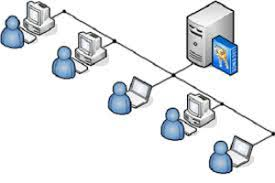

Un sistema operativo en red (NOS) es un software que permite la interconexión de ordenadores para poder acceder a los servicios y recursos, hardware y software creando redes entre ordenadores.
Está diseñado principalmente para soportar estaciones de trabajo u ordenadores personales. La composición principal de un hardware que utiliza un NOS incluye varios ordenadores, impresoras y dos servidores, uno de ellos para archivos con una red local que los conecta entre sí. La función del NOS es proporcionar servicios y características básicas de red que soporten múltiples solicitudes de entrada simultáneamente para entornos multiusuarios.
Todas las comunicaciones de red implican el uso de hardware y software. El soporte de comunicación de red está determinado por el hardware y por el software necesario para ejecutar dicho hardware e interactuar con la red.
El hardware consta del equipo físico que está conectado a la red física. El software consta de los programas y controladores de dispositivo que están asociados con la operación de un sistema determinado. El hardware del sistema consta de un adaptador u otros dispositivos que proporcionan una vía o interfaz entre el software del sistema y la red física. Un adaptador requiere una ranura de tarjeta de E/S en el sistema. Un adaptador prepara todos los datos de entrada y salida; realiza búsquedas de direcciones; proporciona controladores, receptores y protección de sobretensiones; da soporte a diferentes interfaces y, en general, libera al procesador del sistema de muchas tareas de comunicaciones.
